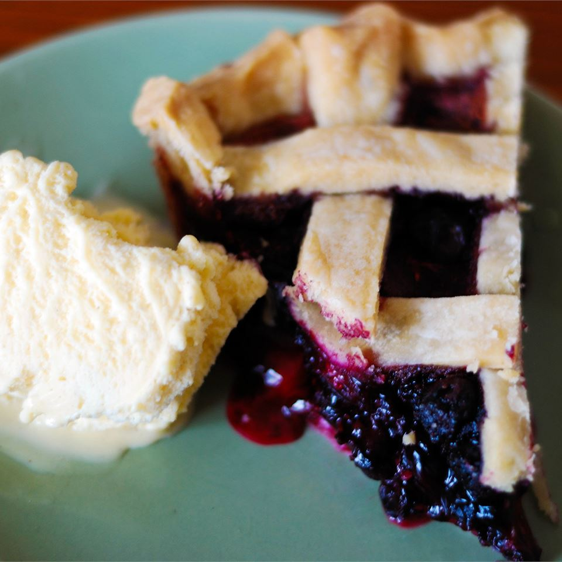

Blueberry Pie
Blueberry pie is the best when made with fresh-picked berries! It is a beautiful sight with a lattice top.

Ingredients
- ¾ cup white sugar
- 3 tablespoons cornstarch
- ½ teaspoon ground cinnamon
- ¼ teaspoon salt
- 4 cups fresh blueberries
- 1 (14.1 ounce) package double-crust pie pastry, thawed
- 1 tablespoon butter
Steps
- Set an oven rack to the lowest position and preheat the oven to 375 degrees F (190 degrees C).
- Mix sugar, cornstarch, cinnamon, and salt and sprinkle over blueberries.
- Line a pie dish with one pie crust. Pour berry mixture into the crust and dot with butter. Cut remaining pastry into 1/2- to 3/4-inch-wide strips. Use the strips to weave a lattice top. Crimp and flute the edges.
- Bake pie on the lowest oven rack until filling is bubbling and crust is golden brown, about 50 minutes.